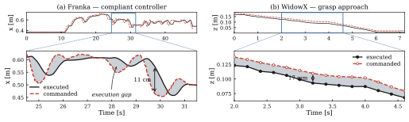
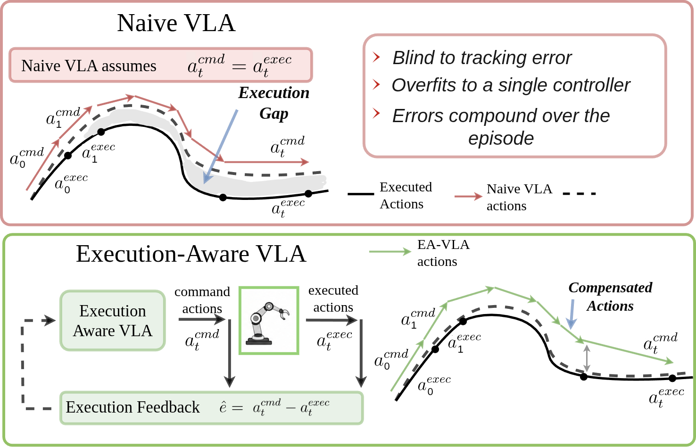
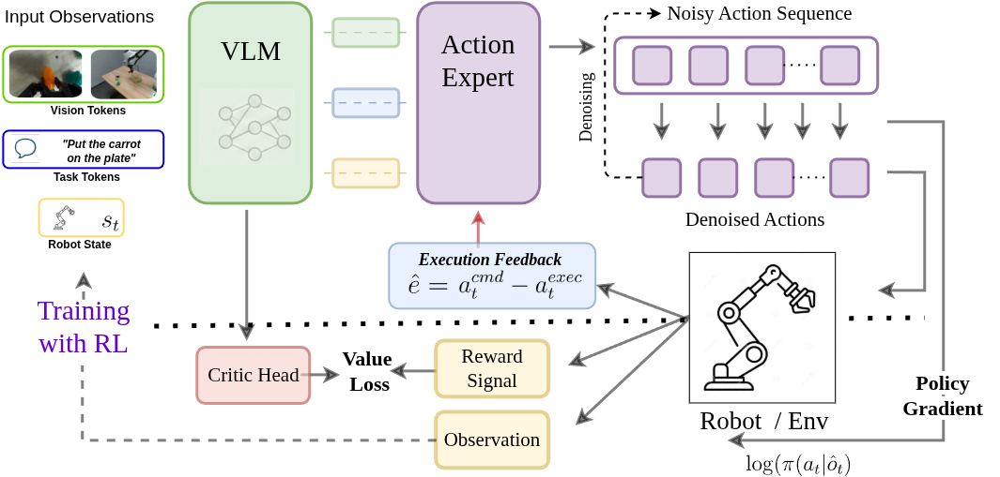
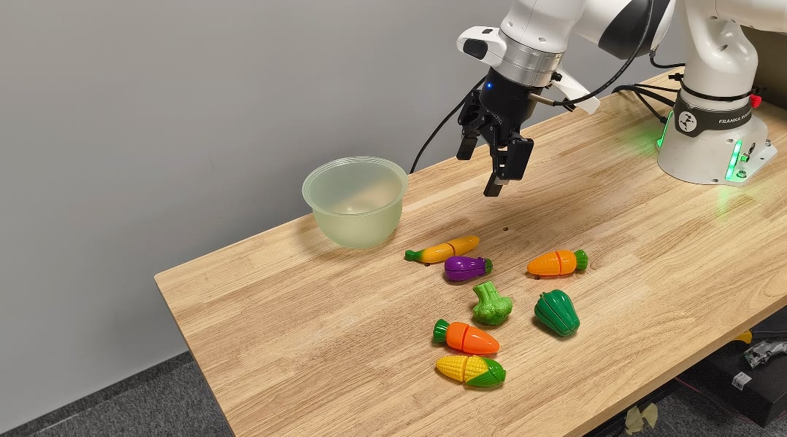
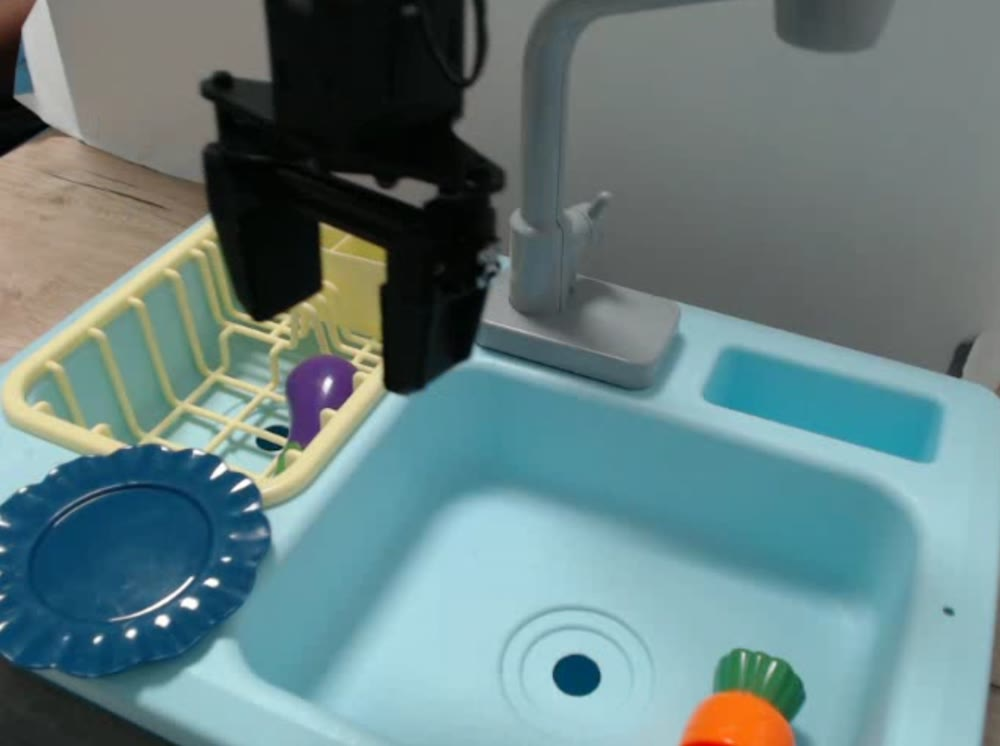
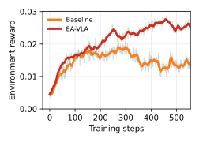
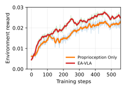

Sombit Dey, Jan-Nico Zaech, Luc Van Gool, Danda Pani Paudel
The video submitted with the paper. It runs 2.5 minutes and has no sound.
TL;DR: Robots never execute exactly what a VLA commands, and how far off they are depends on the
controller. We feed the policy its previous commands together with the robot's measured state and finetune it with RL
under randomized controllers, so that it learns to correct for the difference.
Abstract
Pretrained vision-language-action (VLA) models typically assume particular execution dynamics, which
limits their robustness when deployed with different robot controllers. In practice, physical robots exhibit tracking
error, latency, actuator saturation, compliance effects, calibration inaccuracies and embodiment-specific dynamics,
causing discrepancies between the commanded policy actions and the realized robot motion. We refer to this discrepancy as
the execution gap. To address it, we propose Execution-Aware Vision-Language-Action (EA-VLA), an approach for adapting
pretrained VLA models to varying execution dynamics. EA-VLA augments the robot policy with execution-state feedback,
enabling the policy to reason about discrepancies between commanded and executed behavior during action generation. By
conditioning on robot proprioception and execution-state information, the approach learns to compensate for the
execution gap and tracking error. We evaluate EA-VLA in simulation and on real robots. In simulation, EA-VLA maintains
performance across much larger perturbation magnitudes than baseline VLAs tolerate. On real robots it is robust to the
underlying controller on multiple embodiments, with an 11% higher success rate on WidowX and up to 50% higher throughput
on Franka. These results show that execution-state feedback can substantially improve the robustness of pretrained VLAs
to variations in how their actions are executed.
The execution gap
A VLA outputs a chunk of target poses, and a low-level controller tries to reach them. On a real robot it never
quite does: tracking error, latency, actuator limits, compliance and calibration all make the realized motion differ
from the command. On a WidowX, the commanded and executed end-effector paths differ by up to 2 cm within an
episode. On a Franka with a compliant controller, they can differ by more than 10 cm. That is small next to the
workspace, but large next to the precision needed to grasp or place an object, and an imitation policy that ignores
it lets the error compound.
Pretrained VLAs are trained on data from many robots and controllers, so at deployment they often meet execution
behavior they have not seen. Retuning the controller for every robot and task is one fix, but there is no single best
setting. A stiff controller tracks well and is a poor fit for contact. A compliant one is safer and tracks worse. We
ask instead whether the policy can adapt to whichever controller it runs on.

Commanded actions (red, dashed) against the realized end-effector motion (black), with the gap shaded.
(a) Franka under a compliant controller, where the deviation reaches 11 cm.
(b) WidowX during a grasp approach, with an average offset of 13 mm.

Top: a standard VLA plans as if the robot executes every command exactly. The robot does not, and the
difference between the commanded and the executed path, the execution gap, grows over the episode.
Bottom: EA-VLA is told what it commanded and where the robot actually went, and adjusts its next actions to
compensate.
Method: show the policy what actually happened
EA-VLA keeps the pretrained VLA and adds one input. At every step, a small two-layer MLP φ encodes the
previously commanded action together with the current and previous robot state into an execution-state token:
et = φ(acmdt−1, st, st−1)
The policy receives the last H = 2 of these tokens next to its usual camera images, instruction and
proprioception. The tokens go only to the action expert, the flow-matching head that generates the actions. The
encoder gets the raw commands and states rather than a precomputed residual, which we found to train more stably.
We then finetune the action expert with PPO in simulation, using a value head on the VLM features and a reward of
0.5 for grasping the target and 0.5 for completing the task. In every episode we randomize the stiffness, damping and
friction of the PD controller by a factor k′ = k·exp(σε), with ε ~ U(−1, 1). The
policy is never told these parameters. It has to infer them from how its own commands were carried out.

The VLM encodes the images, the instruction and the robot state. The action expert also receives
execution feedback from the robot and denoises a chunk of actions. During RL training, a critic head on the VLM
estimates value from the rollout rewards, and the action expert is updated by policy gradient.
Changing the controller
We train and test a WidowX in ManiSkill, set up to match BridgeData V2, and make the controller progressively
more different from the nominal one by raising σ. RL finetuning without execution feedback scores best with the
nominal controller, 83.4%, but it has fitted that one controller: at σ = 0.1 it loses 32.3 points. EA-VLA
gives up some nominal performance (77.5%) and holds 80.1% at σ = 0.1 and 60.4% at σ = 0.5, where both
baselines are below 15%. At σ = 1, the level it was trained at, it reaches 28.6%, more than three times the RL
baseline.
Success rate on simulated WidowX pick-and-place as the controller's stiffness, damping and friction are
randomized further from their nominal values (σ = 0). SFT baseline: the supervised-finetuned VLA.
+ RL: the same RL finetuning as EA-VLA, without the execution-state input. The shaded column is the
randomization level EA-VLA was trained at; σ = 2 is beyond it.
Table and history-length ablation
Success rate by randomization level
Model
σ = 0
0.1
0.5
1
2
SFT baseline
48.7%
49.7%
14.2%
4.3%
2.9%
+ RL
83.4%
51.1%
11.2%
8.1%
4.4%
EA-VLA
77.5%
80.1%
60.4%
28.6%
6.1%
Length of the execution-state history H
History
σ = 0
0.1
0.5
1
2
H = 0
83.4%
51.1%
11.2%
8.1%
4.4%
H = 1
70.3%
70.5%
51.7%
22.2%
6.9%
H = 2 (default)
77.5%
80.1%
60.4%
28.6%
6.1%
H = 4
76.3%
76.3%
60.3%
26.4%
5.6%
H = 0 is the + RL model. A single step of history already lifts success at σ = 0.5
from 11.2% to 51.7%. Going from H = 2 to H = 4 adds nothing, so we use H = 2 everywhere.
On real robots
Franka. We finetune EA-VLA and the same VLA without execution feedback on 50 demonstrations of a bussing
task: put seven objects into a bowl. The demonstrations were collected with a compliant controller, and we test with
that controller and with a stiff one. We count how many objects each policy places within 200 steps, averaged over 15
trials, which also reflects failed grasps and retries. EA-VLA places 38% more objects with the compliant controller
and 49% more with the stiff one.
WidowX. A model trained in simulation, with milder randomization (σ = 0.1) and an added constant
drift, runs zero-shot on a real WidowX in the BridgeData V2 setup, over 25 pick-and-place trials per setting. When the previous command is fed back as the state, a common trick for
delta-action VLAs, the two policies are about even. When the robot's measured state is fed back instead, which is the
setting EA-VLA is trained for, the baseline drops 16 points and EA-VLA drops 8, ending 11 points ahead.
Baseline (no execution feedback)EA-VLA (ours)

Franka: bussing
Objects placed in the bowl per episode, of 7

WidowX: zero-shot from simulation
Success rate, 25 pick-and-place trials per setting
In-domain is the condition the baseline is used to: the compliant controller the Franka
demonstrations were collected with, and the previous-command state input on WidowX.
Execution feedback, not just more history
Could any history of robot states do the same job? We train a policy conditioned on past proprioception but not
on past commands, and compare training rewards in simulation. EA-VLA climbs higher (right). The gap to the RL
baseline with no state input is larger still: that baseline's reward peaks around step 300 and then falls (left).
What helps is seeing commanded and executed motion side by side, not more temporal context on its own.
vs. RL baseline without state feedback

vs. proprioceptive history only

Environment reward during RL training in simulation, smoothed. Light traces are the raw values.
Limitations
With the nominal controller, EA-VLA is 5.9 points below RL finetuning without execution feedback (77.5% vs.
83.4%). Robustness costs some peak in-domain performance.
The real-robot studies are small: one Franka task with 15 trials per controller, and 25 WidowX trials per
setting.
EA-VLA needs commands and robot states in its training data. Datasets that were not collected by teleoperation,
such as human or UMI-style demonstrations, contain neither. We vary the controller, not the robot's morphology, so
whether the approach carries across very different embodiments is open. The feedback is limited to proprioception and
past commands. Torque, force and tactile signals are left for future work.